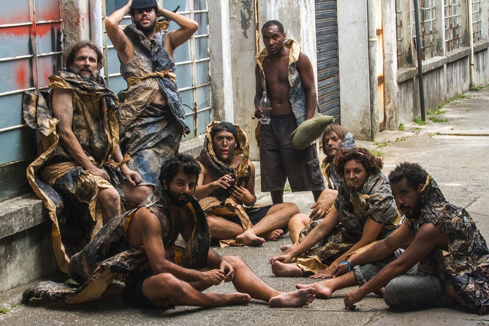
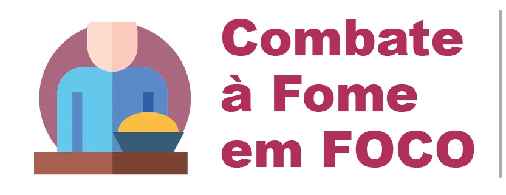

.jpg)
Para combater a fome deveria ter garantia da merenda escolar, incentivo a agricultura familiar,disponibilização de bene fícios sociais,programas de tranfêrencia de renda,geração de empregos, e envestimentos em saneamento básico e qualidade Brasil poderia ser feito para combater a fome no Brasil poderia priorizar quem mais precisa garantir acesso dos agricultores ao mercado reduzir o desperdício de alimentos incentivar a diversidade de culturas agrícolas priorizar a nattrição ,começando pelas crianças
O combate a fome passa por programas de renda mínima familiar e medidas para reduzir as desigualdades regionais e tambem depende de questões como estabilidade econômica, melhora na educação e na geração de emprego, acesso a água e saneamento básico e proteção ambiental.
A fome è um grande problema que afeta 811 milhões de pessoas em todo mundo são vários, dentre os quais estão a desigualdade social , a pobreza ,os conflitos e guerras, as crises econômicas, a má distribuição de alimentos e o manejo inadequado dos recursos naturais nesta luta pela sobrevivência, e necessário unir esforços para combater a fome a fim de garantir alimentos para todos, em quantidades suficiente.Dessa forma,a população estará livre do desabastecimento ,bem como o nsurgimento de graves doenças relacionadas á falta de comida
Programa de Aquisição de alimentos
Programa Cisternas
Programa Cozinha Solidária
Programa Nacional de Agricultura Urbana e Periurbana.
XAção de distribuição de alimentos
Rede Brasileira de bancos de alimentos
O levantamento acende o alerta sobre a volta do fantasma da fome duas décadasde avanços na questão da segurança alimentar foram perdidas e o país retrocedeu aoquadro vivido nos anos 1990.Para milhões de pessoas nessa situação segundo dados do Ipea Instituto de pesquisa Econômica Aplicada ainda que a população 27% menor que a de hoje. Mais está se perguntando e insegurança alimentar?Insegurança alimentar pode ser caracterizado pela falta de acesso pleno ,estável e portanto ,regular a alimentos em qmais amplo de três formas grave ,quando a pessoa convive com a fome dentro de casa e não consegue consumir alimentos por um dia inteiro ou mais moderada ,quando a qualidade está comprometida e a quantidade não é possível realizar todas as três principais refeições de conseguir alimentos é incerta .
causas da fome e impactos da pandemia
A insegurança alimentar ,mais do que a falta de alimento na mesa também é caracterizada pela incerteza refeição .foi esse sentimento de muitos Brasileiros durante a pandemia .A preucupação de quer tomar decisões para que isso não aconteça é ter psicologicamente a fome presente,mesmo que ainda não afirma em entrevista a Folha de S.Paulo REnata Motta ,professora de sociologia da Universidade Livre de Berlim e coordenadora do estudo Efeitos da panbdemia na alimentação e na situação da segurança alimentar no Brasil .O levantamento divulgado em abril de 2021 , indicou que até aquele momento da pandemia ao menos 125 milhões de Brasileiros já haviam sofrido com algum grau de insegurança alimentar .Para enteder porque o problema acentuou-se ainda mais com a chegada do coronavírus , basta saber que a renda - ou antes dela - é principal engrenagem por trás da fome no Brail de natureza ecômica .
Mais se reùne 80 ações e programas,com mais de 100 metas proposta pelos 24 ministèrios que compõem a. Câmara interministerial de segurança alimentar e nutricional.Em 2022,o .Brasil retornou ao mapa da fome legado de um governoque negavaa existêcia do problema e fez o país do problema e fez o país contabilizar 33 milhões de pessoas passando fome . o plano .BRASIL SEM FOME éa resposta do governo federal a essa calamidade São 80 ações e programas , com mais de 100 metas proposta pelos 24 ministèrios que compõem a Câmara interministerial de segurança alimentar e nutricional_caisan ,organizadas em 3 eixos ;1acesso á renda ,redução da pobreza e promoção da cidadania ;alimentaçãoadequada e saúdavel da produção ao consumo mobilização a combate a FOME .Tirar o Brasil do mapa da fome até 2030 ;Reduzir a insegurança alimentar e nutricional especialmente a insegurança alimentar grave.Aumento da renda disponível das famílias para comprar alimentos mapeamento e indetificação de pessoas em nsegurança alimentar para inclusão em políticas de proteção social e acesso á alimentaçao;
Compromisso Brasileiro no combate O documento trouxe boas notícias para o Brasil .Dados do trênio 2021_2023 mostram uma redução significativa na insegurança ,alimentar no país de 32 entre 2020 e 2022 para 18,4% entre 2021 e 2023, uma queda de quase 44%
O governo federal vai adotar uma série de ações de combate á fome com foco nas mulha-feira (25),no Rio de janeiro A data foi escolhida por ser o Dia da Mulher NEGRA LATINO-AMERICANA e CARIBENHA , criado para dar visibilidade a temas como violência eres negras .O anúncio da agenda de medidas foi feito pela ministra da igualdade Racial Franco O conjunto de ações é uma parceria com o ministério do desenvolmento e Assistência
Social,família e combate á (MDS)e soma R$
330 milhões em investimento .a iniciativa está no âmbito do programa BRASIL sem fome ,do governo federal.Durante o lançamento da agenda de palácio guanabara, sede do governo
do Rio de Janeiro, Anielle explicou que a atenção especial ás mulheres negras se dápor causa da maior situação de vunerabilidade dessa população .Setenta e cinco por cento das casas
que estão com inseguranç alimentar grave e quando a pessoa está sem acesso sem comer. O programa tem frentes que preveem investimento na formação tem frentes que preveem investimento
na formação de gestores e profissionais do.Sistema Único de assistência social suas e do.Sistema Nacional de segurança alimentar e nutricional (sisan) e estudos e pesquisa de dados
A gente precisa dos dados para quer saber onde está a população vulnerabilizada e aonde queremos chegar disse Anielle. A ministra informou que haverá esforços para aprimorar cadastros de